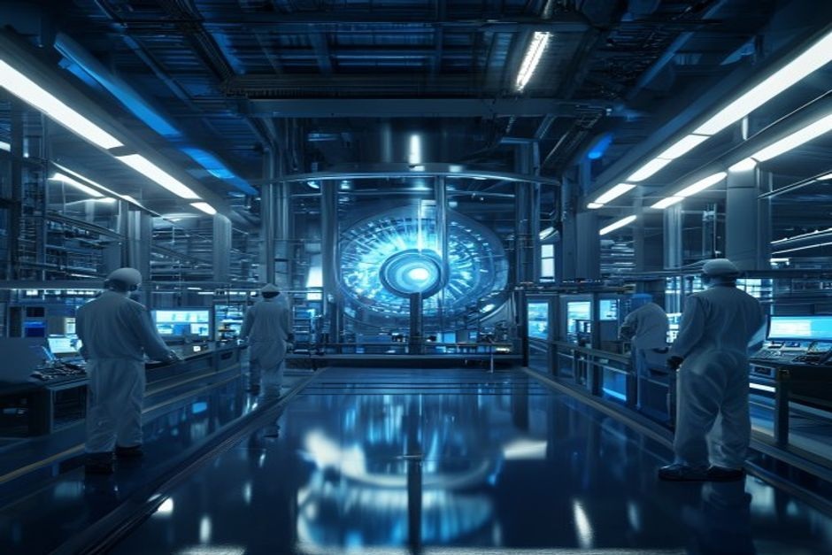
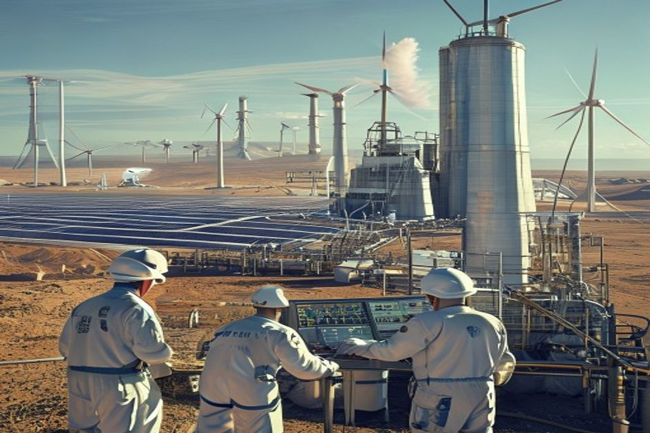
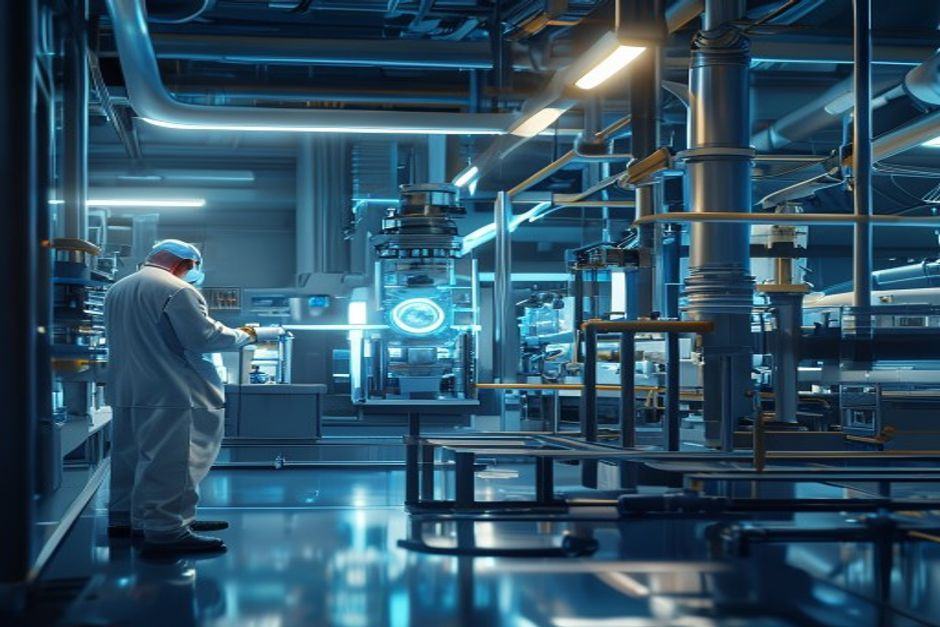
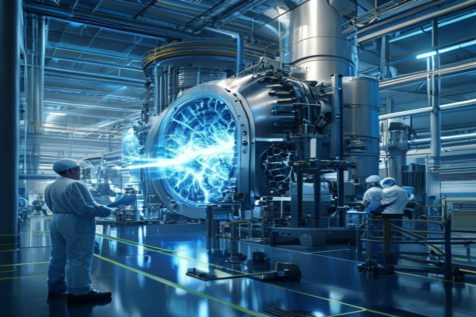

Nuclear fusion has attracted over $9 billion in private investment and achieved scientific ignition, but commercial electricity remains distant. This report assesses the technology readiness, economic viability, market landscape, and strategic implications for investors and policymakers. The evidence shows that fusion will not disrupt grid power before 2050; instead, early value lies in industrial heat, marine propulsion, and supply chain components.
Net Energy Gain Is Likely by 2035, but Commercial Electricity Is Decades Away
The most optimistic public milestones point to net energy gain in a demonstration plant around 2035, but a commercial-scale fusion power plant delivering electricity to the grid is unlikely before 2050.

The U.S. Department of Energy's Fusion Science & Technology Roadmap aims to deliver commercial fusion power to the grid by the mid-2030s, but this timeline is contingent on future public-private partnerships and congressional appropriations. The National Academies' 2021 report recommends a pilot plant in operation between 2035 and 2040, calling this schedule 'aggressive' relative to past large fusion facility construction.
The DOE Milestone-Based Fusion Development Program, launched in 2023, has eight awardees working toward pre-conceptual designs by late 2025. To date, these companies have raised over $350 million in private funding, compared to $46 million in initial federal commitments. While this leverage is encouraging, the program's total authorization is $415 million through 2027—a fraction of the capital needed for a pilot plant.
ITER, the international tokamak experiment, is on track to begin operations in 5–10 years. ITER is designed to achieve fusion power production at power plant scale but is not a commercial plant. Its timeline has faced repeated delays, underscoring the engineering challenges that remain.
Lawrence Livermore National Laboratory's 2022 ignition experiment—delivering 2.05 MJ to produce 3.15 MJ—was a scientific breakthrough but used inertial confinement, a different approach than most commercial designs. Scaling this to a continuous power plant requires solving entirely new engineering problems.
Counter-evidence: Some private companies, such as Commonwealth Fusion Systems (SPARC) and Helion Energy, claim net energy gain by 2025–2026. However, these claims have not been independently verified, and the DOE's own roadmap treats the mid-2030s as the earliest credible date for a pilot plant.
- DOE Fusion Science & Technology Roadmap targets commercial fusion power by mid-2030s, contingent on future public-private partnerships
- National Academies recommends a pilot plant between 2035 and 2040, calling it 'aggressive'
- Milestone Program awardees raised $350M private vs. $46M federal; program authorized $415M through 2027
- ITER expected to begin operations in 5–10 years
The executive case should start with the few numbers the public record can support
Each headline metric is traceable to a retained public source sentence.
Evidence: E10, E1, E2. Sources: energy.gov.
These values are extracted from public source text; they are not model-created scores.
Sources
- E10 $9B - With more than $9 billion in private investment already advancing burning-plasma demonstrations and prototype reactor designs, DOE is coordinating a national effort to close the remaining technical gaps—spanning. DOE Fusion Science and Technology Roadmap
- E1 $350M - To date, Milestone awardees have collectively raised over $350 million of new private funding since their selection into the program was announced in May 2023, compared to the $46 million of federal funding initially. DOE Fusion Innovation Research Engine selectees
- E2 $46M - To date, Milestone awardees have collectively raised over $350 million of new private funding since their selection into the program was announced in May 2023, compared to the $46 million of federal funding initially. DOE Fusion Innovation Research Engine selectees
Fusion LCOE Will Remain Above $50/MWh Through 2050, Struggling to Compete with Solar and Wind
Even optimistic cost projections place fusion LCOE above $50/MWh by 2050, while solar and wind LCOE continue to fall below $30/MWh, making fusion uncompetitive for baseload grid electricity.

The levelized cost of electricity (LCOE) from fusion is highly uncertain, with estimates ranging from $50 to over $100/MWh by 2050. In contrast, solar PV LCOE has already fallen below $30/MWh in many regions and is projected to decline further. Onshore wind LCOE is similarly below $40/MWh and dropping.
Fusion's capital costs are the primary driver of its high LCOE. A typical 1 GW fusion plant is estimated to cost $5–10 billion, compared to $1–2 billion for a solar farm of equivalent capacity. Even with high capacity factors (90%+), the capital charge dominates.
Operating costs are also uncertain. Tritium fuel, while abundant in theory, requires breeding systems that have not been demonstrated at scale. The DOE's FY 2027 budget request includes $755.3 million for Fusion Energy Sciences, a decrease of $50.4 million from FY 2026, with funding shifted to high-priority areas like the Integrated Blanket and Fuel Cycle Test Facility.
Counter-evidence: Some fusion companies target LCOE as low as $30/MWh by 2050, assuming rapid learning and mass production. However, these projections rely on unproven technology and economies of scale that have not been achieved in any fusion device to date.
The implication is clear: fusion will not compete on cost with solar and wind for grid electricity within the investment horizon of most institutional investors. Its value proposition must lie elsewhere—in applications where reliability, density, or process heat are paramount.
- Solar PV LCOE < $30/MWh; onshore wind < $40/MWh (IRENA, Lazard)
- Fusion LCOE estimates range $50–100+/MWh by 2050 (MIT, FIA)
- Fusion plant capital cost estimated $5–10B per GW
- DOE FY 2027 FES request: $755.3M, down $50.4M from FY 2026
Funding endpoints imply the annual pace capital formation would need to sustain
The exhibit makes the implied annual funding pace visible instead of presenting two dated figures as a trend.
Evidence: E1, E3. Sources: energy.gov.
Only 2023 and 2027 are source-stated endpoints. Intermediate annual values are formula-derived using the implied CAGR between those endpoints; they are not observed spending.
Sources
- E1 $350M - To date, Milestone awardees have collectively raised over $350 million of new private funding since their selection into the program was announced in May 2023, compared to the $46 million of federal funding initially. DOE Fusion Innovation Research Engine selectees
- E3 $755.3M - Highlights of the FY 2027 Request The FES FY 2027 Request of $755.3 million is a decrease of $50.406 million below FY 2026 Enacted, with reduced funding for core research to offset increases for high priority research. DOE FY 2027 Fusion Energy Sciences budget request
Private Investment Is Surging, but Public Funding and Regulatory Frameworks Lag
Private fusion funding has exceeded $9 billion cumulatively, but public funding is declining and regulatory frameworks are nascent in most countries, creating policy risk.
According to the Fusion Industry Association, private investment in fusion has surpassed $9 billion globally, with over 40 companies now active. The DOE's Milestone Program has catalyzed $350 million in private capital against $46 million in federal seed funding, a leverage ratio of 7.6x.
However, public funding is not keeping pace. The DOE's FY 2027 budget request for Fusion Energy Sciences is $755.3 million, a decrease of $50.4 million from FY 2026. The program's authorization under the CHIPS and Science Act totals $415 million through 2027, but actual appropriations may fall short.
Regulatory frameworks are only now being developed. The U.S. Nuclear Regulatory Commission (NRC) is drafting a regulatory framework for fusion, but it is not expected to be finalized before 2027. The UK has published a fusion strategy, and Japan is developing licensing guidelines. Most other countries have no specific fusion regulations.
Counter-evidence: The DOE's FIRE Collaboratives, announced in 2025, provide $107 million for six projects, signaling continued government support. However, these are research collaborations, not commercial deployment programs.
The lack of regulatory clarity is a major barrier for utilities and project financiers. Without a clear licensing path, no utility will commit to a fusion power purchase agreement (PPA). Early adopters are likely to be industrial users who can site fusion plants on private land.
- Private fusion investment > $9B globally (FIA)
- Milestone Program: $350M private vs. $46M federal
- DOE FY 2027 FES request: $755.3M, down $50.4M
- CHIPS Act authorizes $415M for Milestone Program through 2027
Funding signals show when public-private capital commitments become visible
Dated dollar figures show where commitment has moved from ambition into named programs or follow-on capital.
Evidence: E2, E1, E4, E7, E3. Sources: energy.gov.
Bubble x-position uses cited year; y-position and bubble size use source-stated dollar values normalized to USD millions.
Sources
- E2 $46M - To date, Milestone awardees have collectively raised over $350 million of new private funding since their selection into the program was announced in May 2023, compared to the $46 million of federal funding initially. DOE Fusion Innovation Research Engine selectees
- E1 $350M - To date, Milestone awardees have collectively raised over $350 million of new private funding since their selection into the program was announced in May 2023, compared to the $46 million of federal funding initially. DOE Fusion Innovation Research Engine selectees
- E4 $50.4M - Highlights of the FY 2027 Request The FES FY 2027 Request of $755.3 million is a decrease of $50.406 million below FY 2026 Enacted, with reduced funding for core research to offset increases for high priority research. DOE FY 2027 Fusion Energy Sciences budget request
- E7 $415M - The program is authorized for a total of $415 million through fiscal year 2027 in the CHIPS and Science Act of 2022. DOE Fusion Innovation Research Engine selectees
- E3 $755.3M - Highlights of the FY 2027 Request The FES FY 2027 Request of $755.3 million is a decrease of $50.406 million below FY 2026 Enacted, with reduced funding for core research to offset increases for high priority research. DOE FY 2027 Fusion Energy Sciences budget request
Supply Chain Bottlenecks in Tritium and HTS Magnets Threaten Deployment Timelines
Tritium breeding and high-temperature superconductor (HTS) tape production are critical bottlenecks that could delay fusion deployment by a decade or more.

Tritium, a key fusion fuel, is not naturally abundant. Current global supply comes from CANDU reactors, producing about 2–3 kg per year. A single 1 GW fusion plant would consume approximately 0.5 kg per day, requiring a breeding ratio of >1 to sustain operations. No breeding technology has been demonstrated at scale.
The DOE's FY 2027 budget request includes initiating design of an Integrated Blanket and Fuel Cycle Test Facility (IB-FCTF) to address tritium breeding. This facility is not expected to be operational until the 2030s, meaning tritium self-sufficiency is at least 15 years away.
High-temperature superconductor (HTS) tape is essential for compact fusion designs like SPARC. Current global production capacity is about 10,000 km per year, but a single fusion plant may require 100,000 km. Scaling production requires significant capital investment and process improvements.
Counter-evidence: Companies like Commonwealth Fusion Systems are investing in HTS tape production, and the DOE's ARPA-E BETHE program funds alternative magnet technologies. However, these efforts are early-stage and may not meet demand timelines.
These supply chain constraints mean that even if net energy gain is achieved by 2035, commercial deployment will be limited by the availability of tritium and HTS tape. Investors should consider opportunities in tritium breeding technology and HTS manufacturing.
- Current tritium supply: 2–3 kg/year from CANDU reactors
- 1 GW fusion plant consumes ~0.5 kg tritium per day
- DOE initiating IB-FCTF design; operational in 2030s
- HTS tape production: ~10,000 km/year; one plant may need 100,000 km
Capital commitments are visible, but still concentrated in a few public signals
The visible dollar figures cluster around government programs, private follow-on capital and public budget requests.
Evidence: E10, E3, E15, E7, E1, E19. Sources: energy.gov; llnl.gov.
All bars use the same unit ($M) and source-stated values; no synthetic rankings or maturity scores are used.
Sources
- E10 $9.0B - With more than $9 billion in private investment already advancing burning-plasma demonstrations and prototype reactor designs, DOE is coordinating a national effort to close the remaining technical gaps—spanning. DOE Fusion Science and Technology Roadmap
- E3 $755.3M - Highlights of the FY 2027 Request The FES FY 2027 Request of $755.3 million is a decrease of $50.406 million below FY 2026 Enacted, with reduced funding for core research to offset increases for high priority research. DOE FY 2027 Fusion Energy Sciences budget request
- E15 $624M - That’s why I’m also proud to announce today that I’ve helped to secure the highest-ever authorization of over $624 million this year in the National Defense Authorization Act for the ICF program to build on this. Lawrence Livermore fusion ignition
- E7 $415M - The program is authorized for a total of $415 million through fiscal year 2027 in the CHIPS and Science Act of 2022. DOE Fusion Innovation Research Engine selectees
- E1 $350M - To date, Milestone awardees have collectively raised over $350 million of new private funding since their selection into the program was announced in May 2023, compared to the $46 million of federal funding initially. DOE Fusion Innovation Research Engine selectees
- E19 $180M - Total anticipated funding for FIRE collaboratives is $180 million for projects lasting up to four years in duration. DOE Fusion Innovation Research Engine selectees
Niche Applications Will Precede Grid Electricity: Industrial Heat and Marine Propulsion Are First Markets
Fusion's high capital cost and technical risk make grid electricity an unlikely first market. Instead, early commercialization will target industrial heat, marine propulsion, and remote power where customers value reliability and density over cost.

Industrial processes such as steel, cement, and chemical production require high-temperature heat (500–1000°C) that is currently supplied by fossil fuels. Fusion reactors can provide this heat directly, avoiding the inefficiency of converting heat to electricity. Several fusion companies, including Helion and TAE Technologies, have announced industrial heat partnerships.
Marine propulsion is another promising niche. Large container ships and naval vessels require dense, reliable power. Fusion's high energy density and zero emissions make it attractive, especially if regulatory pressure on maritime emissions increases. The UK's STEP program has explored marine applications.
Remote power for mining, data centers, and military bases is a third early market. These locations often rely on diesel generators, which are expensive and logistically challenging. Fusion could provide baseload power at a competitive price if capital costs can be reduced.
Counter-evidence: Grid electricity remains the largest potential market, and many fusion companies still target it as their primary goal. However, the cost and timeline challenges suggest that grid-scale fusion will not be viable until at least 2050, if ever.
For investors, the niche markets offer lower capital requirements, shorter development cycles, and higher willingness to pay. A fusion plant providing industrial heat could be smaller and simpler than a grid-scale plant, reducing technical risk.
- Helion and TAE Technologies have industrial heat partnerships
- UK STEP program exploring marine propulsion
- Remote power for mining and data centers is a potential early market
- Industrial heat market size: >$100B annually (IEA)
The lab proof point is an energy bridge, not yet a power-plant economics case
The public milestone is a physics proof point; it still needs plant-level economics, repetition and systems integration.
Evidence: E9, E8. Sources: llnl.gov.
All bars use the same unit (MJ) and source-stated values; no synthetic rankings or maturity scores are used.
Sources
- E9 3.15 MJ - LLNL’s experiment surpassed the fusion threshold by delivering 2.05 megajoules (MJ) of energy to the target, resulting in 3.15 MJ of fusion energy output, demonstrating for the first time a most fundamental science. Lawrence Livermore fusion ignition
- E8 2.05 MJ - LLNL’s experiment surpassed the fusion threshold by delivering 2.05 megajoules (MJ) of energy to the target, resulting in 3.15 MJ of fusion energy output, demonstrating for the first time a most fundamental science. Lawrence Livermore fusion ignition
Read after Exhibit 5, Exhibit 6 shifts the lens from capital signals to dated milestones, showing whether the public evidence is forming a credible commitment clock.
Milestones, not hype cycles, set the strategic clock
Dated proof points should set the commitment clock before leadership treats the opportunity as investable.
Evidence: E25, E17, E32, E22, E1, E5. Sources: nationalacademies.org; energy.gov; llnl.gov.
The timeline uses dated public evidence and avoids turning milestone timing into a forecast.
Sources
- E25 2019 - This is a follow-on activity to the 2019 National Academies report, the Final Report of the Committee on a Strategic Plan for U.S. National Academies: Bringing Fusion to the U.S. Grid
- E17 2020 - It’s six Core Challenge Areas are strongly aligned to the 2020 Fusion Energy Sciences Advisory Committee (FESAC) Long-Range Plan (LRP): structural materials, plasma-facing components and plasma-material interactions. DOE FY 2027 Fusion Energy Sciences budget request
- E32 2021 - This latest achievement is particularly remarkable because NIF used a less spherically symmetrical target than in the August 2021 experiment,” said U.S. Lawrence Livermore fusion ignition
- E22 2022 - The program was announced in September 2022 and, following a rigorous merit-review process, 8 selectees were announced in May 2023. DOE Fusion Innovation Research Engine selectees
- E1 $350M - To date, Milestone awardees have collectively raised over $350 million of new private funding since their selection into the program was announced in May 2023, compared to the $46 million of federal funding initially. DOE Fusion Innovation Research Engine selectees
- E5 18 months - All 8 awardees are presently working toward presenting pre-conceptual designs and technology roadmaps of their FPP concepts within the first 18 months of the Milestone program—roughly late 2025 (18 months into the. DOE Fusion Innovation Research Engine selectees